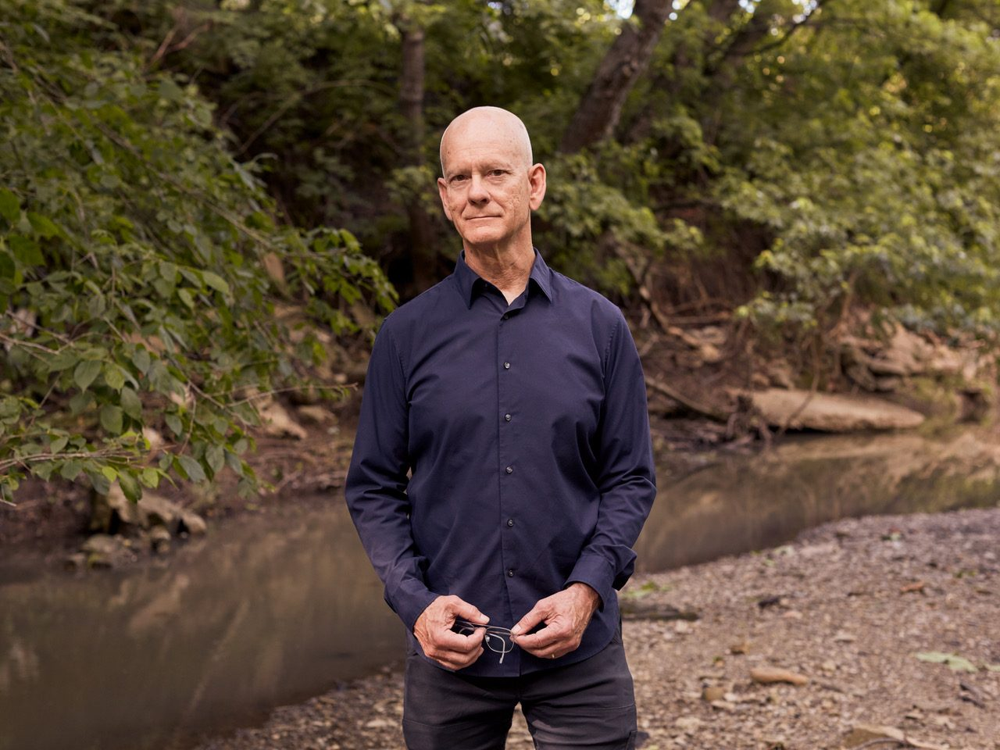

Upsidedown Creek is a real place
Eric Moe on the piece CreArtBox plays on 30 October. The creek is a real one in Montana, the sign at the trailhead really is upside down, and the music came partly from a tango.
Read on →Four productions at The DiMenna Center for Classical Music, eleven works chosen from the ensemble's open call, one world premiere, touring dates in Illinois, Kentucky and the Hudson Valley, a residency in Finland, and the seventh Festival ADAR in Asturias.

New York, NY, 10 September 2026. CreArtBox, the New York chamber music ensemble, has announced its twelfth season. It runs from October 2026 to August 2027 and takes in ten dates.
The centre of the season is the New York Series: four productions at The DiMenna Center for Classical Music, each at 7:30 pm. Currents (30 October 2026) is built around one idea, current, moving air, moving water, energy going from one place to another, and pairs Eric Moe's Laminar Flow in Upsidedown Creek and a new piece by the ensemble's flutist Guillermo Laporta with Brahms and both Schumanns. Winterlight (11 December 2026) opens with the world premiere of Hannah Selin's Tectonic Lullaby for piano quintet and closes with Stravinsky's Petroushka in a chamber arrangement. Pressure and Release (23 April 2027) is given over entirely to the open call: seven works, seven composers, one evening. Feverdream (7 May 2027) closes the season with Sibelius's G minor Piano Quintet.
Tickets for Currents are on sale now through Eventbrite. Dates for the remaining New York Series productions go on sale in turn; touring dates are ticketed by their presenters.
The full release, with photographs and logos for the press, is here. Press contact: marketing@creartbox.nyc.

Eric Moe on the piece CreArtBox plays on 30 October. The creek is a real one in Montana, the sign at the trailhead really is upside down, and the music came partly from a tango.
Read on →